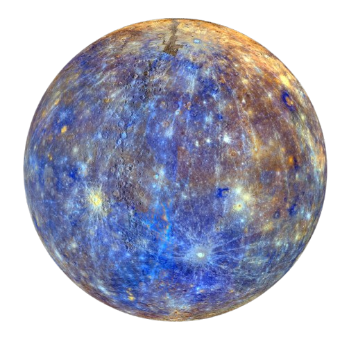
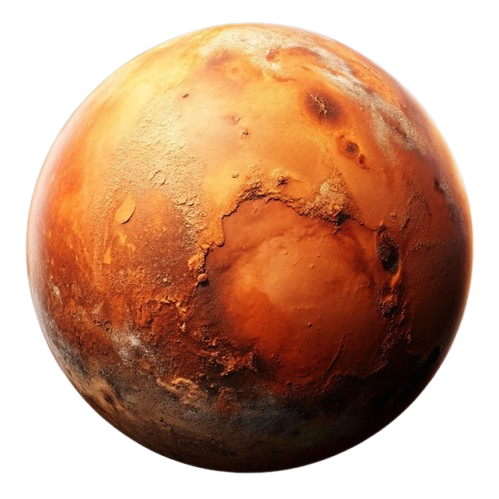

MERCURY
Planet terkecil di Tata Surya dan yang paling dekat dengan Matahari.
Planet terkecil di Tata Surya dan yang paling dekat dengan Matahari.

Memiliki atmosfer tebal yang memerangkap panas dalam efek rumah kaca yang dahsyat.

Satu-satunya tempat yang diketahui di alam semesta yang dihuni oleh makhluk hidup.

Dunia gurun yang dingin dengan atmosfer yang sangat tipis dan musim yang mirip Bumi.

Planet terbesar di Tata Surya, dengan massa dua kali lipat dari semua planet lain digabungkan.

Terkenal dengan sistem cincin yang megah, terdiri dari bongkahan es dan batu.

Planet yang unik karena berotasi pada sisinya, hampir tegak lurus terhadap orbitnya.

Planet terjauh yang sangat dingin dengan kecepatan angin melebihi kecepatan suara.